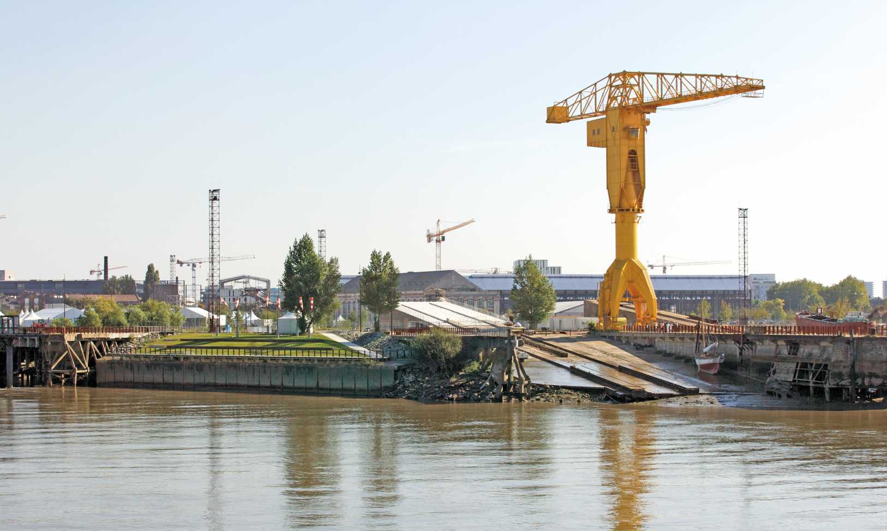

Survolez l'image et agrandissez/réduisez la vue à l'aide de la molette.
Budget: 1 426 000 € HT
Surface totale; Surface SHON: 2 377 m2 (cale 2), 1 200 m2 (cale 3); 837 m2 (cale 2), 360 m2 (cale 3)
Date début: 2005
Date fin: 2009
Maîtrise d'ouvrage: SAMOA (SEM)
Co-traitant(s): bureau des paysages
Description:
Sur l’île de Nantes, les deux cales de lancement de bateaux conservées figurent, au même titre que les
Nefs, parmi les rares bâtiments restant de l’activité des anciens chantiers navals fermés en 1987. Au sein
du Parc des Chantiers composé de promenades en bord de Loire, d’estacades, de jardins, d’espaces publics
capables d’accueillir différents programmes à vocation culturelle, associative ou commerciale, les cales
participent à la mémoire industrielle des lieux.
Les cales n°2 et n°3 datent en partie de 1917 mais ont été
reconstruites après la guerre, en 1946. Leur réhabilitation concerne leur partie hors sol. Les cales, dont la
pente est une caractéristique formelle, sont à la fois des espaces intérieurs et extérieurs. Marcher sur le
sol de l’espace public, c’est aussi marcher sur le toit d’une cale. A l’intérieur, le volume varie en fonction de
la hauteur, les voûtes de dimensions décroissantes offrant des ouvertures différentes les unes des autres.
Comment tirer avantage des qualités intrinsèques des cales, les détourner de leur fonction initiale sans
les dénaturer pour autant ?
Un entretien soigneux (nettoyage des façades), des réparations ponctuelles
(remplacement des menuiseries, des jointures), des interventions raisonnées (mise en place d’un système
de recueil des eaux pluviales, imperméabilisation, éclairage…), suffisent à restituer l’intérêt architectural
des cales. Quelques aménagements intérieurs conçus comme du mobilier en contreplaqué (rangements,
cuisine, sanitaires…) permettent ensuite d’offrir aux associations un local adapté à leurs besoins : espaces
d’exposition, bureaux, ateliers, remise, stockage d’outillage, vestiaires, sanitaires, etc. Au-delà de cet
usage, les cales sont ouvertes sur un espace public.
{kind=link}
{kind=link}
{kind=link}
{kind=link}